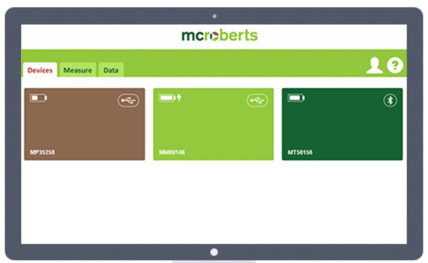
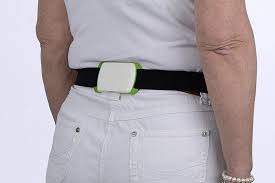

McRoberts MoveMonitor (Patient Materials)
- General Device Introduction
- Data transfer protocol for patients
- Device How To / setup for wear
- Troubleshooting/FAQ
- Device return
General Device Introduction
MoveMonitor records your movement as you go about your daily life, such as walking and sleeping. The movement data collected can be used to calculate a range of assessments, such as energy expenditure. MoveMonitor can record data for up to 7 days without needing to be charged.
How does this device look?
The device is a flat white sensor (Figure 1), it is easy to clean and wear at the lower back using the elastic strap provided (Figure 2). My McRoberts is a website (Figure 3) for configuring the MoveMonitor sensor prior to use in research.
 |
 |
 |
| Figure 1: MoveMonitor Sensor. | Figure 2: MoveMonitor with strap. | Figure 3: My McRoberts software. |
|
| Figure 1: MoveMonitor Sensor. |
|
| Figure 2: MoveMonitor with strap. |
| Figure 3: My McRoberts software. |
What does it record?
MoveMonitor automatically records anonymised movement data, such as_position_of body and the_speed_and_direction_that you move. My McRoberts then uses this data to create reports such as energy expenditure or movement during sleep.
How is it used?
MoveMonitor is worn on the lower back (waist) using the elastic strap provided for 24/7 monitoring and up to 7 days of continuous measurements. The device isnot waterproofand can be either worn on the skin or over clothing (preferably the first layer).
|  | |
| Figure 4: MoveMonitor being worn around the waist. |
| Figure 4: MoveMonitor being worn around the waist. |
Data transfer protocol for patients
As a patient: do I need to do anything on a daily basis or all N days?
N DAYS= 5 days, up to 7 days of continuous measurement.
Make sure you wear the device in the position indicated by your clinician for the advised time frame. Your study period may last up to ($TIME_PERIOD – N DAYS) days. You will wear the sensor 24/7 - also during sleeping. Make sure you wear the MoveMonitor correctly. The device should be worn around the waist, at the middle of the lower back. The engraved McRoberts logo should be readable, and the waist belt should be on the inside. It can be worn directly on the skin or over a thin layer of clothes. Please note that the MoveMonitor is not waterproof, so it is not suitable for showering, bathing or swimming.
 |
| Figure 5: How to correctly wear MoveMonitor. |
|
| Figure 5: How to correctly wear MoveMonitor. |
As a patient: do I need to do anything after each individual period of device / app use ended?
No. After ($TIME_PERIOD – N DAYS) days you will be contacted by a clinician and will either (i) be provided with a new device; (ii) meet a clinician to return the device and retrieve your data; or (iii) receive another device to wear.
As a patient: do I need to do anything after my full periods of use of a specific device / app ends?
Yes. You will be contacted by a clinician to see how your full period of use has been. They will complete an evaluation questionnaire with you over the phone (or by visiting you at your home). You can give the researcher your device in person or by posting it back to the centre in order to retrieve your data.
Device How To / setup for wear
What sort of a device / application is this, what is it for and how does it work?
The MoveMonitor is a device that is worn with an elastic strap around the waist, powered by an internal battery. It collects physical activity data of a subject for up to 7 days (24/7). Programming and data retrieval are done by a (healthcare) professional and devices can be re-used.
|
|
|
| Figure 1: MoveMonitor Sensor. | Figure 2: MoveMonitor with strap. | Figure 3: My McRoberts software. |
|
| Figure 1: MoveMonitor Sensor. |
|
| Figure 2: MoveMonitor with strap. |
| Figure 3: My McRoberts software. |
Make sure you wear the MoveMonitor correctly. The device should be worn around the waist, at the middle of the lower back. The engraved McRoberts logo should be readable, and the waist belt should be on the inside. It can be worn directly on the skin or over a thin layer of clothes. Please note that the DynaPort MM is not waterproof, so it is not suitable for showering, bathing or swimming.
|
| Figure 5: How to correctly wear MoveMonitor. |
|
| Figure 5: How to correctly wear MoveMonitor. |
What MoveMonitor is and what it does
- What a MoveMonitor is and what it does [video; internet connection required]
What will I need to do before I can start using this?
Any account setup required?
No
Needs pairing with hub-device?
No
Any configuration / assembly required?
No
Troubleshooting/FAQ
The device / app seems to have stopped working: what should I do?
Battery?
The battery lasts for the entire measurement, you do not need to recharge the device during the measurement. The LED’s on the device will only give feedback during the first 5 minutes of the measurement. After that, they will be switched off.
In case the battery does run empty the LED will blink red, for example, when the device was not fully charged before the start of the measurement. Please contact the study centre below if this occurs.
Connectivity issues?
Not applicable.
Need to restart or log in again?
Not applicable.
How can I get help with using this?
If you have any other questions or concerns, please contact your local study centre:
| Newcastle upon Tyne, United Kingdom | Rotterdam, Netherlands | Kiel, Germany | Muenster, Germany |
|---|---|---|---|
| Person Name, Centre Name, Location | Person Name, Centre Name, Location | Person Name, Centre Name, Location | Person Name, Centre Name, Location |
Newcastle upon Tyne, United Kingdom
Location
Person Name
Centre Name
Rotterdam, Netherlands
Location
Person Name
Centre Name
Kiel, Germany
Location
Person Name
Centre Name
Muenster, Germany
Location
Person Name
Centre Name
Using the device / app is uncomfortable to me: what can I do?
Adjust wear style?
It is recommended to wear the device (using the elastic belt) over a thin layer of clothing (e.g. T-shirt). Ideally, the MoveMonitor device should be worn over the same or similar piece of clothing and in the same place daily to ensure comparable data is collected.
Adjust usage pattern?
It is recommended to wear the sensor 24/7 as the project aims to investigate sleep and fatigue.
Further Troubleshooting for Professionals
- ‘Study code’ is required while sign up. What should I enter?
‘IDEA-FAST’
- Start and end time of a measurement in ‘My McRoberts’ indicates invalid date.
Please check if you selected a start time that is in the future and contact the support team to check the measurement. Make sure you provide the username and measurement ID.
- Can’t load DynaPort Manager.
If you keep getting the error “Could not load DynaPort Manager, please install or start the program” while you installed the DynaPort Manager, it means the DynaPort Manager isn’t running or the certificates of the browser aren’t set up correctly.
{kind=link}
To start the DynaPort Manager you need to paste
C:\Program Files (x86)\McRoberts\DynaPortManager
in the address bar of the File Explorer and right-mouse-click on “Run” and click on “Run as Administrator”.
{kind=link}
If you get the error “The software is already running”, you need to setup the certificates for the browsers by taking the following steps:
- Close all the active browsers.
- Close the DynaPort Manager in the Task-manager (ctrl+shift+esc). Click on the program Network (32 bit) and end this task.
- Paste
C:\Program Files (x86)\McRoberts\DynaPortManager\bin\gencert
in the address bar and run “Gencert.cmd” as administrator (right-mouse-click “Run as Administrator”). - Start the DynaPort Manager as described above and open MyMcRoberts in your browser.
- Connect a device. The DynaPort Manager is working if the device is visible.
{kind=link}
{kind=link}
If you are still getting the loading error in My McRoberts, please contact the support team.
- An error occurs while downloading data stored on the device to the PC.
In that case the path to which the measurement is transferred often doesn’t exist. The current path used for transferring data can be seen by going to C:\Program Files (x86)\McRoberts\DynaPortManager. Left klick on the file ‘Run’ and choose ‘edit’. The store path is shown and can be altered here. Make a screenshot and send it to the supportteam. You can also try to upload the measurement manually.
- How do I upload a measurement that is stored on my PC?
If you want to upload a measurement that is stored on your PC, you can go to https://www.mcroberts.nl/mymcroberts/manual_upload.php . Here you will be able to upload and process raw data.

Contact McRoberts if it is stated that the measurement has already been uploaded.
- How do I change subject characteristics (weight, height, gender, date of birth) of existing subjects?
Once characteristics have been entered, they cannot be altered by the user to prevent unwanted changes from occurring. Send an email to McRoberts and McRoberts’ personnel will do it for you. Please include the username, the project, the subject and the values you want to be changed.
- Which browser is recommended for the use of My McRoberts?
McRoberts recommends using Chrome or Firefox. Make sure your browser is up to date. Regarding the use of the MoveTest we advise against Internet Explorer.
- What is the maximum measurement duration of the MoveMonitor?
The maximum measurement duration of the MoveMonitor is 7 days.
- The serial/ID number in MyMcRoberts doesn’t correspond with the serial number of the back of the device. What can I do?
Contact mcroberts including the serial number as shown in MyMcRoberts and the serial number on the back of the device.
Device return
What do I do when a period of device use is over?
You will be contacted by a member of your local study centre in order to return the device.
Before the device is returned or disposed of: does any data need to be transferred?
No action required.
Do I need to return the device somewhere?
Please contact the person that provided you with it to arrange further steps. You will have to return it by post – subject to further individual arrangement.